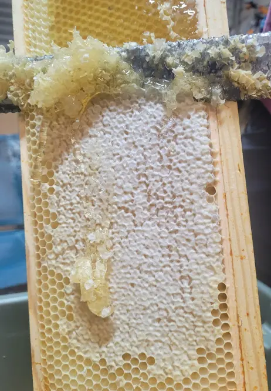

Honey Extraction (UK)
Last updated: 1 May 2026
A practical, step-by-step guide to checking ripeness, uncapping, extracting, filtering and bottling honey.
Quick tip: Only extract honey that's properly ripe. Unripe honey can ferment in the jar.
Quick overview of honey extraction
In simple terms, honey extraction involves:
- Checking that honey is ripe and ready.
- Removing supers from the hive and clearing the bees.
- Uncapping the comb to expose the honey.
- Spinning or draining honey out of the comb.
- Filtering and settling the honey.
- Bottling and labelling it for home use or sale.
For background on how bees actually produce the honey in the first place, see How Bees Make Honey.
When is honey ready to extract?
Honey should be ripe before you remove and extract it. Unripe honey contains too much water and is at risk of fermenting in the jar. Bees themselves use a simple system: they cap cells with wax once they are happy with the moisture content.
Visual checks
- Most of the cells on the frame – often quoted as at least 80–90% – are sealed with wax cappings.
- Remaining uncapped nectar looks thick and does not run out when you gently shake the frame over the open hive.
Using a honey refractometer
A honey refractometer is a simple tool that lets you measure the moisture content of honey. Many beekeepers aim for 18% water or less. This reduces the risk of fermentation and helps honey keep well.
If only part of a super is ready, you can harvest the capped frames and leave the rest on the hive a little longer. Your seasonal timing will depend on the forage available; see A Year in the Apiary for more on when UK beekeepers typically remove supers.
What if it's capped but still too wet?
It can happen in very damp weather, or if nectar was stored before it fully ripened. If you're unsure, check moisture with a refractometer and avoid bottling anything borderline.
Equipment you will need for honey extraction

You do not have to buy everything at once, but some items make the job much easier. Basic equipment may include:
- A bee-proof way to remove supers (e.g. clearing board or gentle bee escape).
- Uncapping tools – a serrated knife, uncapping fork or dedicated uncapping plane.
- A honey extractor – manual or electric, tangential or radial.
- One or more food-grade buckets or ripeners with honey gates.
- Strainers or filters to remove wax particles and debris.
- Clean, dry jars with lids for bottling.
- Plenty of washable cloths or paper towels for spills.
Budget option: Many associations lend extractors or have a shared honey room you can book.
Many local associations lend extractors to new beekeepers or offer space in a shared honey room. Your choice of equipment will also depend on the scale of your beekeeping and your budget – see Beekeeping Equipment for broader considerations.
Step-by-step honey extraction process
1. Choose a suitable day and location
Honey extraction is easier when:
- The day is warm and dry – honey flows more easily when warm.
- You have access to a clean, bee-free room where spills can be managed.
- You have time to work steadily without rushing.
Choose a calm, practical setup so the whole process stays cleaner, quicker and less stressful for both you and the bees.
2. Remove supers and clear bees
The aim is to bring supers into the honey room with as few bees as possible. Common methods include:
- Bee escapes or clearing boards placed beneath the supers the day before extraction.
- Shaking and brushing bees from frames back into the hive (often used to finish clearing individual frames).
Always handle supers gently to avoid crushing bees and spilling honey. Keep them covered once removed, to discourage robbing or wasps and to keep bees out of your extraction space.
3. Uncap the comb
Before honey can be extracted, wax cappings must be removed to expose the honey:
- Rest the frame over an uncapping tray or large food-grade container.
- Use a warm, serrated knife or uncapping tool to slice off the cappings in smooth strokes.
- Use an uncapping fork to lift cappings from any low spots the knife misses.
The cappings themselves contain honey and wax that can be recovered later. Set them aside in a separate container for straining and wax processing.
4. Extract the honey
With the comb uncapped, frames can be placed in the extractor:
- Load the extractor evenly to keep it balanced during spinning.
- Start slowly, then increase speed to avoid damaging the comb.
- For tangential extractors, spin one side of the frame, then turn it around and repeat.
The honey is flung out of the comb by centrifugal force and runs down the walls of the extractor to the bottom, ready to be drained into a bucket or ripener.
5. Strain and settle the honey
As honey leaves the extractor, pass it through one or more filters to remove wax crumbs and debris.
- a coarse filter for larger particles, and
- a fine filter for smaller bits of wax.
Once filtered, honey should be left to settle in a covered bucket or ripener for at least a day or two. During this time, air bubbles and remaining fine particles float to the surface and can be skimmed off before bottling.
6. Bottling the honey
When you are happy with the appearance of the honey and its moisture content:
- Ensure jars and lids are clean, dry and suitable for food use.
- Open the honey gate carefully and fill jars, leaving a little headspace at the top.
- Wipe any drips from the outside of jars and fit lids firmly once the jars are dry.
Store filled jars in a cool, dry place out of direct sunlight. If you plan to sell honey, check current labelling and composition requirements for your part of the UK.
Hygiene, safety and basic legal points
Honey extraction combines food handling with working around large numbers of bees. Good hygiene and safe practice protect both your bees and the people who eat your honey.
Hygiene and disease control
Key points include:
- Do not extract honey from colonies with suspected serious brood diseases until you have clear advice from your bee inspector or association.
- Clean extraction equipment between uses and avoid mixing honey from colonies you are worried about.
- Never feed supermarket honey to bees; it can carry disease spores.
For more on disease prevention and cleaning equipment, see Hive Hygiene and the Bee Diseases section.
Food safety and labelling
Honey intended for sale must comply with the relevant food standards and honey regulations in your country. These cover:
- What may (and may not) be added to honey.
- Water content and quality expectations.
- How jars must be labelled for sale.
Personal safety and bee stings
Honey-rich equipment can excite bees and attract wasps. Work steadily, keep entrances under control and be familiar with sting management. The Bee Stings page provides more detail on recognising reactions and basic first aid.
How much honey should you leave for the bees?
It is often said that beekeepers should take the surplus, not the stores. In practice, estimating the right amount to leave depends on:
- Hive type and volume (National, 14×12, Langstroth, etc.).
- Local climate and length of the winter.
- Colony strength and health.
- Availability of late-season forage (e.g. ivy, heather).
Many UK beekeepers aim to overwinter colonies with the equivalent of a full brood box of stores, topped up with autumn feeding if needed. Regular checks, careful record-keeping and experience in your own area will help refine your judgement – the monthly notes in A Year in the Apiary give a useful framework.
Common honey extraction problems and troubleshooting
Honey too thin or fermenting
If honey ferments in the jar, it is usually because the moisture content was too high at bottling. To reduce the risk:
- Wait until most cells are capped before extracting.
- Use a refractometer, especially in damp summers.
- Avoid leaving uncapped honey in a warm room for long periods before extraction.
Comb collapsing in the extractor
This can happen if comb is very new, very warm or the extractor speed is increased too quickly. Try:
- Starting slowly and gradually increasing the speed.
- Extracting older comb first and treating very fresh comb more gently.
Lots of wax particles in jars
Check that your filters are correctly positioned and not overflowing. A coarse and fine filter combination usually gives good results.
Crystallisation in the jar
Crystallisation is natural for many honeys. If you prefer runny honey, jars can be gently warmed in a suitable warming cabinet or a very careful water bath – never overheating the honey. For a smooth soft-set honey, controlled crystallisation can actually be used deliberately.
Honey Extraction FAQs
Honey is usually ready to extract when most of the cells on a frame are sealed with wax cappings and any uncapped honey does not drip out when the frame is gently shaken over the hive. Using a honey refractometer to confirm a water content of around 18% or lower gives extra confidence that honey is ripe and stable.
The amount depends on hive type, region and colony strength, but many UK beekeepers aim to leave the equivalent of a full brood box of stores for winter. It is safer to be generous and harvest a little less than to strip a colony too hard and risk starvation later in the season.
A honey extractor is the most efficient way to remove honey from comb while preserving the comb structure, but small-scale beekeepers sometimes use crush-and-strain methods. These can be perfectly acceptable but destroy comb and may be more labour-intensive.
After extraction, many beekeepers strain honey through one or two food-grade filters to remove wax particles and debris. Honey is then left to settle in a covered ripener or bucket so air bubbles rise to the surface. It should be stored in clean, dry jars with tight lids in a cool, dark place.
Yes. In the UK, honey sold to the public must comply with relevant food labelling and composition regulations, such as the Honey Regulations. These cover matters like additives, water content and labelling. Check the latest guidance and, if needed, speak to your local trading standards service.